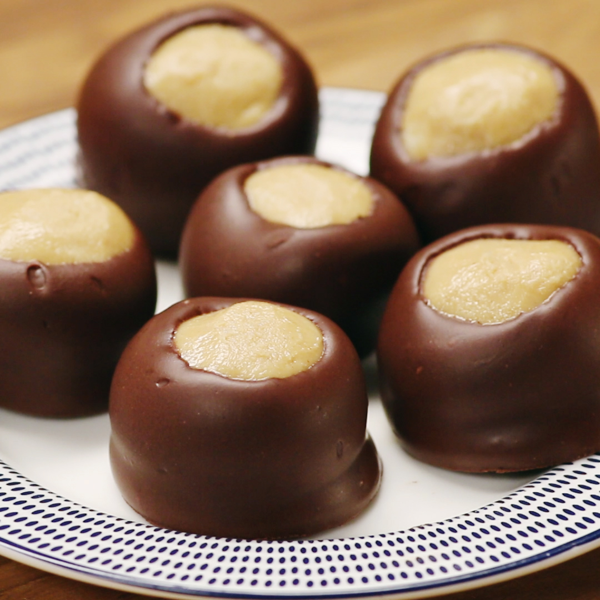

Peanut Butter Balls

Description
No oven but need a dessert that satisfies your taste buds AND your stomach? Look no further than these no-bake Buckeyes. All you need are four easy-to-find ingredients and a decent sweet tooth – we know you’ve got it all. It’s never not the time to throw together this quick and easy dessert that’s perfect for entertaining or even just for yourself!
Ingredients
- 1/2 cup melted butter
- 1 1/2 cups peanut butter
- 2 1/2 cups powdered sugar
- 1 cup chocolate chips, enough for dipping
Steps
- Mix butter, peanut butter, and powdered sugar until well blended. More or less powdered sugar can be used to make mixture more or less dry.
- Make 1 inch balls and freeze for about 20 minutes or until firm.
- Microwave chocolate chips for 60 seconds, stopping every 15 seconds to check and stir. Adding some vegetable shortening can make the chocolate thinner and easier work with.
- Remove balls from freezer and dip most of the way into the chocolate, coating all but a small circle on top. Using a toothpick for this works well but simply dipping it in and pulling it out with a fork also works. Place completed buckeyes on wax paper and allow to harden. Refrigerate if needed.
- Enjoy!